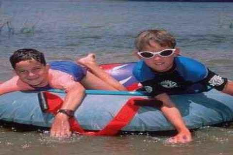
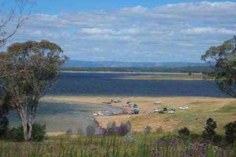
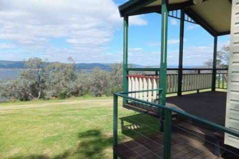
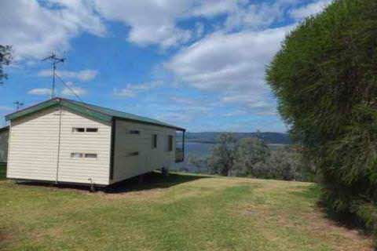
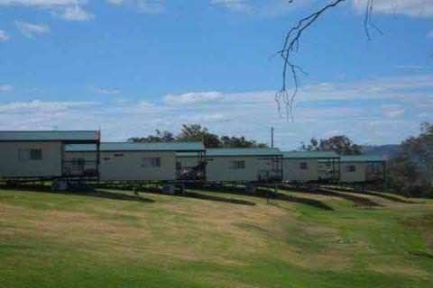

PHONE
PHONE GET DIRECTIONS
GET DIRECTIONS- 
-

- 
- 
- 
- 
COORDINATES: 32º41'17.87"S, 149º 6'30.67"E
LOCATION: Lake Burrendong State Park is only a one hour drive from either Dubbo or Orange and five hours from Sydney. If you are coming from the north of the state, the park is 27km south-east of Wellington.